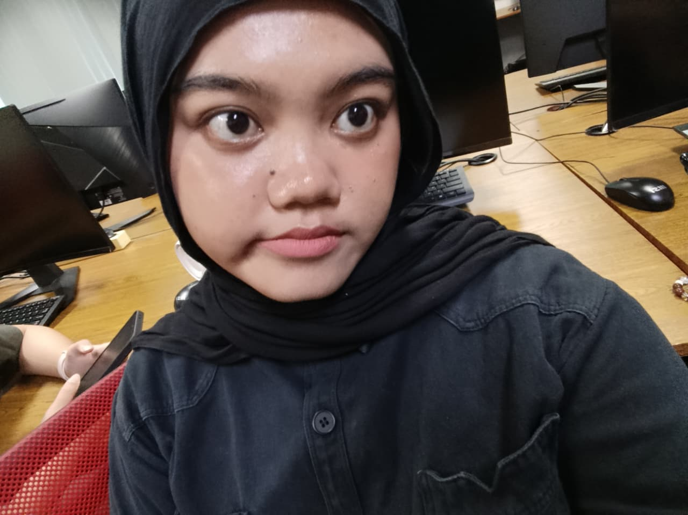

Rekayasa keamanan siber
Hai, aku Hana Rafifa Helmi
Mahasiswa Politeknik Negeri Batam yang sedang menempuh pendidikan di Program Studi Rekayasa Keamanan Siber sejak tahun 2025 dan sekarang sedang menjalani semester 3. Aku juga merupakan anggota dari Himpunan Mahasiswa Teknik Informatika sejak Februari tahun 2026 hingga sekarang.

Tentang Aku & Skill
Sekilas tentang apa yang lagi aku pelajari dan kerjakan.
Sebagai mahasiswa di Politeknik Negeri Batam dengan Program Studi Rekayasa Keamanan Siber, pastinya aku mempelajari dasar-dasar yang harus dimiliki oleh seorang siber security. Seperti Kriptografi, Linux, Windows Fundamental, dan lainnya. Selama dua semester sebelumnya aku sudah mengerjakan dan menyelesaikan proyek dengan baik, diantaranya aku mendeploy web dan sebagai memegang jobdesk di windows fundamental.